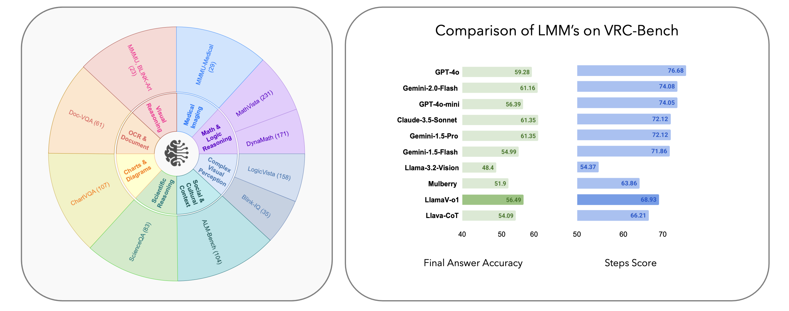

The figure illustrates a comprehensive dataset structure designed to evaluate diverse tasks across
multiple domains. The dataset spans a wide range of categories, including mathematical and logical
reasoning (e.g., MathVista with 231 samples and
LogicVista with 158 samples),
scientific reasoning (e.g., Science-QA with 83
samples), and visual perception
(e.g., Blink-IQ-Test with 35 samples).
Additionally, it includes specialized
areas such as medical imaging (e.g., MMMU-Medical
with 29 samples), cultural and
social understanding (e.g., ALM-Bench with 104
samples), and document understanding through OCR (e.g., Doc-VQA with 61
samples). By integrating tasks like chart and diagram comprehension (e.g., Chart-VQA with 107 samples), our dataset not only
covers a broad spectrum of real-world applications but also expand
LMM's ability to reason, perceive, and interpret complex multimodal information.
The right chart also presents a comparative evaluation of large multimodal models (LMMs) on the
VRC-Bench, highlighting both final
answer accuracy and step-by-step reasoning scores. The bar chart on the right demonstrates the
performance of various models, such as GPT-4o,
Gemini-2.0-Flash, Claude-3.5-Sonnet, and Llava-CoT, in handling complex reasoning tasks. Our
benchmark evaluates models not only on their
ability to generate accurate final answers but also on the coherence and logical flow of their
reasoning steps. Our approach, LlamaV-o1,
outperforms GPT-4o-mini, Gemini-1.5-Flash and Llava-CoT in the VRC-Bench, achieving
superior results in final answer accuracy
across complex multimodal reasoning tasks.